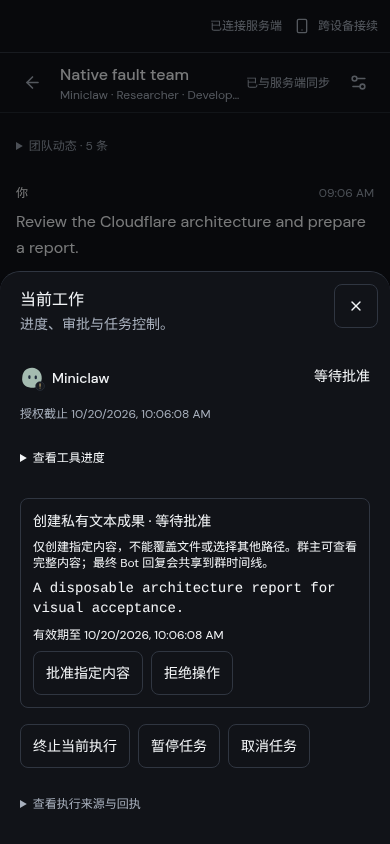

可自托管的个人智能体工作台
从一句委托开始。让助手找回上次的决定，安排每周的工作，在需要你授权时，把请求送到工作台。
产品导览
从对话进入工作现场，查看进行中的目标，处理等待你决定的请求。
日常使用
新对话会按当前问题检索同一工作区的记忆，并在聊天活动中记录载入情况。
选择执行日和时间，按服务器时区预览接下来三次触发，再保存任务。
离开桌面时，仍可打开会话查看请求的操作和权限。

快速开始
准备 Git、Node.js 22.19 或更高版本、npm 和 GNU Make。容器模式还需 Docker。启动后访问 http://127.0.0.1:3000 完成初始化。
http://127.0.0.1:3000
git clone https://github.com/xuilen/OpenDot.git cd OpenDot npm install npm --prefix web install npm --prefix container/agent-runner install npm run build:all npm start